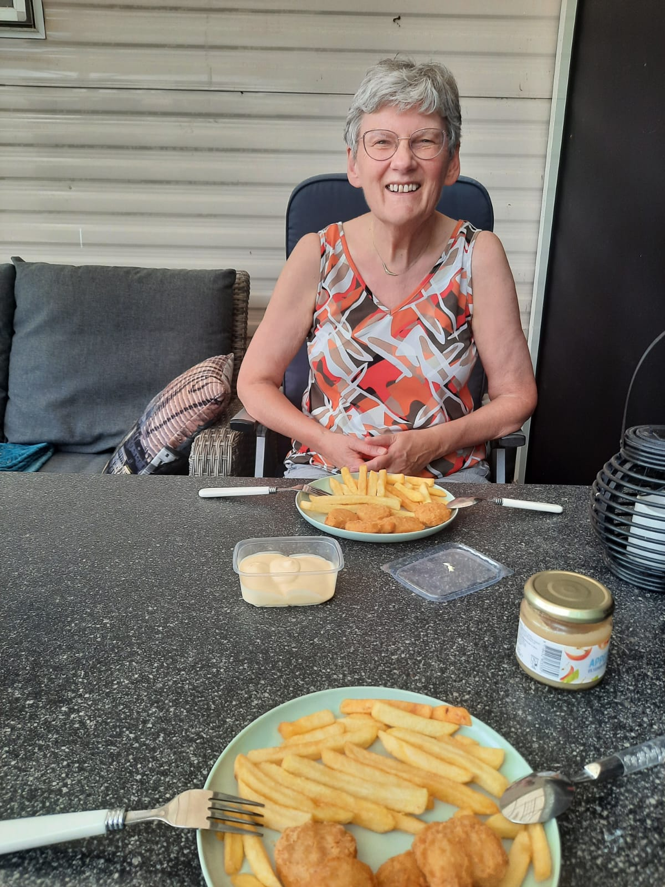
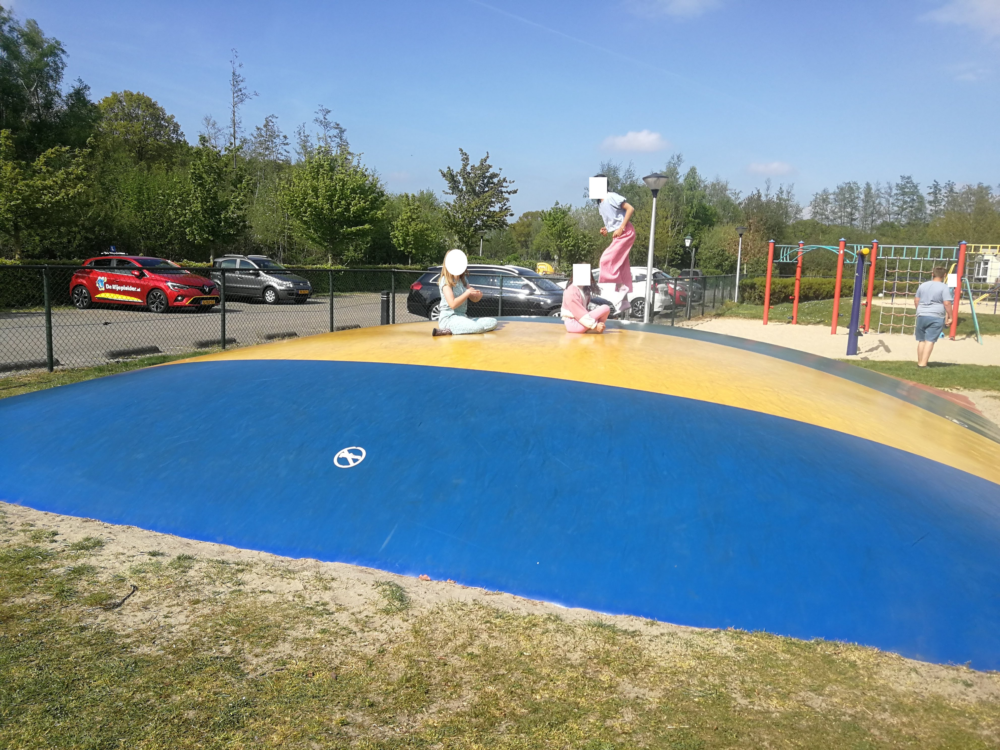

Over ons - verhuurders stacaravan Twente (Diepenheim)
Gezellige stacaravan voor 4 personen op camping De Mölnhöfte, ideaal voor rust, fietsen, wandelen en jonge gezinnen.


Wie zijn wij?
Wij zijn Peter ('81), Annegreet ('84) en Lammie de Graaf ('55) uit Enschede. In 2021 gingen wij, Peter en Annegreet, met onze 2 kinderen in de meivakantie op vakantie in een stacaravan op de Mölnhöfte in Diepenheim. Die vakantie beviel ons bijzonder goed. Tijdens wandelingen over de camping zagen we de ruime plekken en gemoedelijke sfeer. Een paar maanden later mochten we ons, samen met onze (schoon)moeder, eigenaar noemen van onze eigen stacaravan op een prachtig plekje op de camping. Vanaf dat moment hebben we beetje bij beetje eerst buiten en toen binnen de boel aangepakt en gemoderniseerd.
.jpg)
.jpg)

Wij genieten graag in het hoogseizoen en tijdens feestdagen van deze mooie plek, de ene keer gaan Peter en Annegreet als gezin en de andere keer gaat Lammie (met bv. een vriendin) lekker er op uit richting Diepenheim. Voor ons maar een half uurtje rijden, dus ideaal. Het verschil op de camping tussen de feest- en vakantiedagen en overige weken/weekenden is vrij groot te noemen. Buiten de feest- en vakantiedagen is het namelijk een heel stuk rustiger op de camping en zie je maar een handjevol mensen. Natuurlijk wordt het wel iets drukker naar mate het hoogseizoen nadert en het weer mooier wordt, maar het is hierom dat wij denken dat onze stacaravan het meest geschikt is voor gezinnen met jonge kinderen (die buiten de schoolvakanties op vakantie willen) en mensen die houden van rust, de omgeving en bv. fietsen (we noemen 50+ ers, maar dat kan natuurlijk in alle leeftijden).
Lammie en haar vriendin fietsen altijd heel wat af als zij in onze stacaravan verblijven. Er zijn talloze fietsroutes en elke keer ontdekken ze weer nieuwe, mooie plekjes. Zo hebben zij onder andere al erg genoten van de zandsculpturen bij kasteel Warmelo, het Oranjemuseum vlakbij en een fietstocht over de heide met zicht op de schaapskudde. Annegreet en Peter vinden het heerlijk om buiten te loungen, soms tot in de late uurtjes. Vandaar dat we een grote overkapping hebben gemaakt met verlichting en een stroompunt. Ook wandelingen maken met de hond of korte fietstochtjes zijn aan hen besteed. Of naar Pitch and Putt voor een potje golven. Allemaal genieten wij ook graag van eten in het restaurant bij de camping. De kok kan er wat van, het is altijd heerlijk! De kinderen genieten graag van een lekker ijsje van het restaurant, van de verschillende speeltuintjes, zijn regelmatig de hort op en bedenken steeds weer nieuwe spelletje rond het grote springkussen. Ook bezoekjes aan een overdekt zwembad in de buurt, een maïsdoolhof, pannenkoekenrestaurant, boomhut of natuurspeeltuin zijn aan te raden met kinderen.

.jpg)
.jpg)

.jpg)
Wij hebben dus zelf een hondje. Het is een toy poedel, zij verhaart niet en heeft een anti-allergene vacht. Een aantal van ons gezin is namelijk
allergisch voor honden, maar gelukkig dus niet van die van ons. Wij hebben er over nagedacht of wij mensen met een hond zouden willen verwelkomen in onze caravan, maar we willen voorkomen dat er allerlei geurtjes en haartjes achterblijven
waar wij of onze hond last van kunnen hebben. Bovendien kunnen veel honden zorgen voor overlast door te blaffen en ook willen wij voorkomen dat er op ongewenste plekken poep achterblijft. Mocht u zelf ook een anti-allergene hond hebben die niet/nauwelijks blaft, netjes de behoefte van de hond buiten het terrein van de camping wil laten doen en een goed verhaal hebben waarom u toch echt met uw hond wil komen, dan kunnen we altijd even overleggen of het toch mogelijk is.
Contact
Heeft u vragen of wilt u meer informatie? Neem gerust contact met ons op via peterenannegreet@gmail.com ,telefonisch 06-42738357 of WhatsApp ons
Reviews
We zijn nog maar net begonnen met verhuren, we zouden het erg leuk vinden als u een review zou willen schrijven nadat u geweest bent.
Wat gasten zeggen:
“Een fijn verblijf met alle gemakken op een mooie, strategische plek op de camping. Prachtige fietsroutes in de omgeving nodigen uit om erop uit te gaan, maar ook heerlijk relaxen bij de caravan is mogelijk.”
⭐️⭐️⭐️⭐️ Google review van Lia Hekman
Stacaravan te huur in Diepenheim, Twente – op camping De Mölnhöfte. Bekijk de beschikbaarheid en reserveringsmogelijkheden.